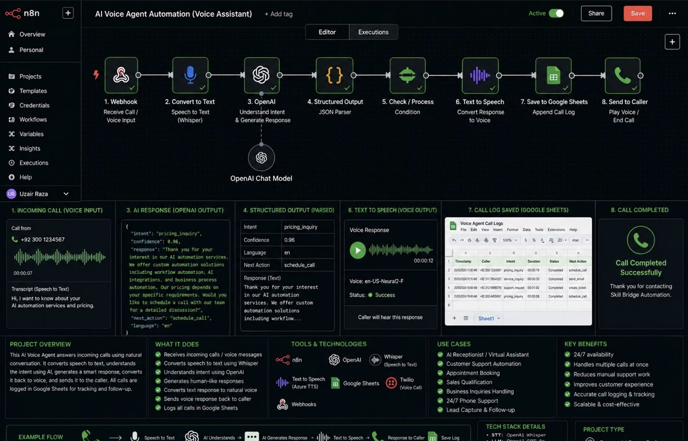
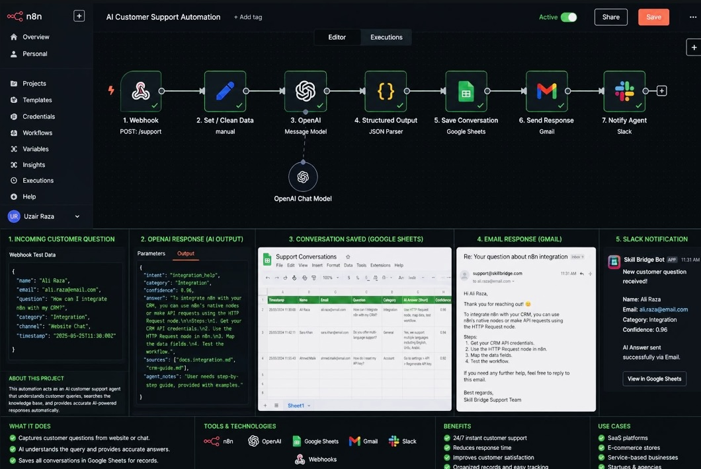
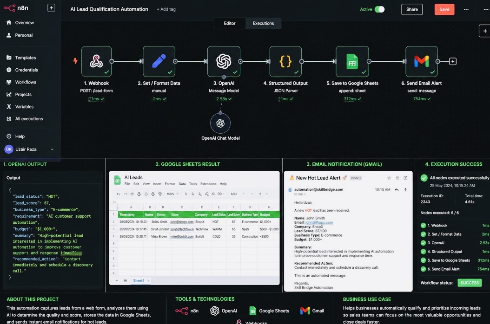
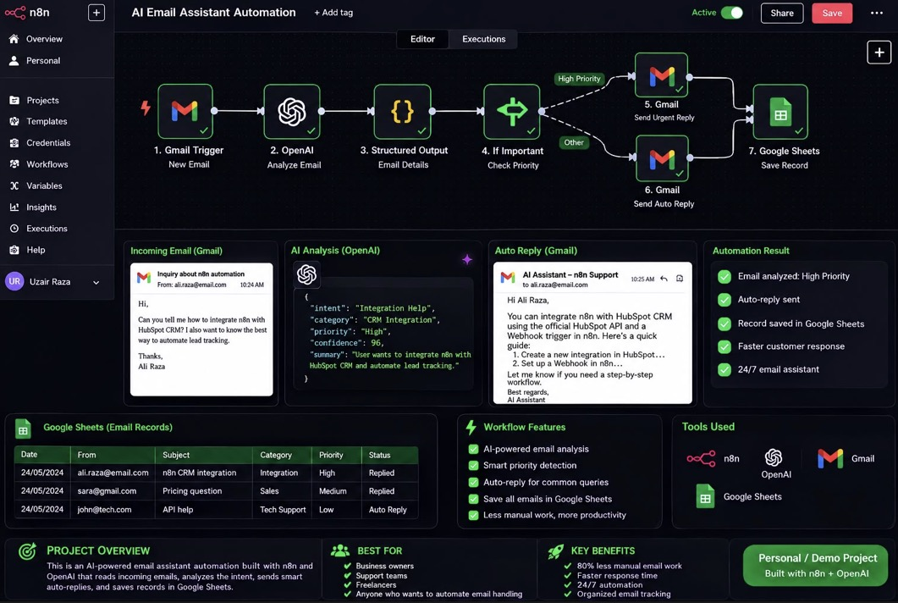

AI Automation
End-to-end automations that read, understand and act on incoming work — emails, forms, documents and requests — so routine tasks complete without anyone touching them.
Learn moreOrdex Digital helps businesses transform their operations through AI automation, intelligent AI agents, workflow systems, ecommerce automation and scalable cloud architecture.
Ordex Digital is a technology studio focused on applied AI. We design automations and AI agents that sit inside the tools a business already uses — email, forms, spreadsheets, CRMs, chat and phone — and take over the work that eats the day.
Every build starts from a real process, not a demo. We map how work moves through your business, find the parts that can run on their own, then build a system that handles them reliably and keeps a record of everything it does.
More about how we workYour team spends its hours on judgement and clients, not on copy-paste.
Data moves between tools automatically instead of being re-entered by hand.
Enquiries get answered, sorted and logged the moment they arrive.
Architecture that still holds up when volume, tools and team size grow.
Five practice areas, one goal: less manual work and a business that runs on systems you can trust.
End-to-end automations that read, understand and act on incoming work — emails, forms, documents and requests — so routine tasks complete without anyone touching them.
Learn moreAssistants that hold a conversation, work out what the customer actually wants, answer from your own knowledge and hand off to a human when it matters. On chat, email or voice.
Learn moreYour tools, connected. Leads route themselves, records stay in sync, notifications reach the right person, and nothing waits in someone's inbox for a day.
Learn moreOrder updates, customer questions, product and inventory workflows, and marketing follow-ups handled automatically, so the store runs beyond working hours.
Learn moreInfrastructure planning, integration design and cloud deployment for automations and applications that need to stay available as usage grows.
Learn moreAutomation only pays off when it is built around the way your business actually runs.
We use AI where it genuinely helps — understanding messy input, classifying it, drafting a response — and plain logic everywhere else.
Nothing is dropped in from a template. Each workflow is built for your tools, your data and the steps your team already follows.
Built to handle more volume without rewriting: modular workflows, clean data structures and cloud infrastructure that can grow.
Automation platforms, large language models, APIs and cloud services — combined into one system rather than a pile of disconnected tools.
We start with the outcome you need — faster replies, cleaner data, fewer missed leads — and work backwards to the build.
Error handling, logging and clear records in every workflow, so you can see what ran, what it decided and what it produced.
Four stages from first conversation to a system your team relies on.
We map the process as it works today: the tools, the handoffs, the steps that slow everything down.
We decide what should be automated, what should stay human, and which AI and platform choices fit the job.
The system is developed, connected to your tools and tested against real cases until the output is dependable.
Once it is live we watch how it performs, tune the logic and extend it to the next process.
Working automations built on n8n with OpenAI and the everyday tools businesses already run on.

AI AgentsAnswers an incoming call, transcribes the caller with Whisper, works out the intent, generates a spoken reply through text-to-speech and logs the whole call to a sheet.

AI AgentsTakes questions from a website or chat widget, answers from the knowledge base with a confidence score, emails the customer and posts the whole thread to Slack for the team.

Workflow AutomationCatches every lead form submission, scores it hot, warm or cold with a short summary and recommended action, stores it in a sheet and alerts sales on the ones worth calling now.

AI AutomationReads new mail as it lands, classifies the intent and priority, sends an urgent or standard reply on the right path and keeps a searchable record of every message.
Let's build smarter systems, automate your workflows and unlock new possibilities for your business.